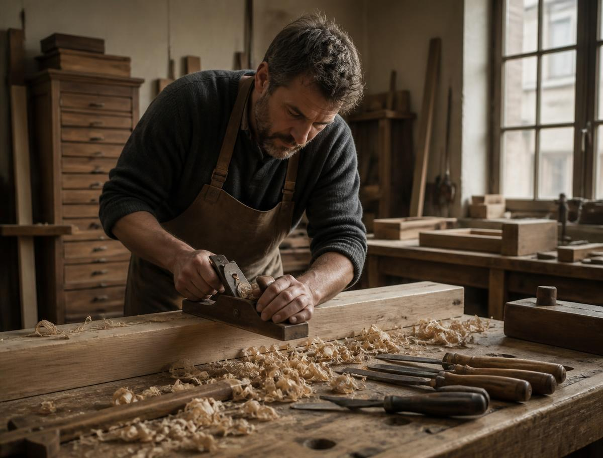
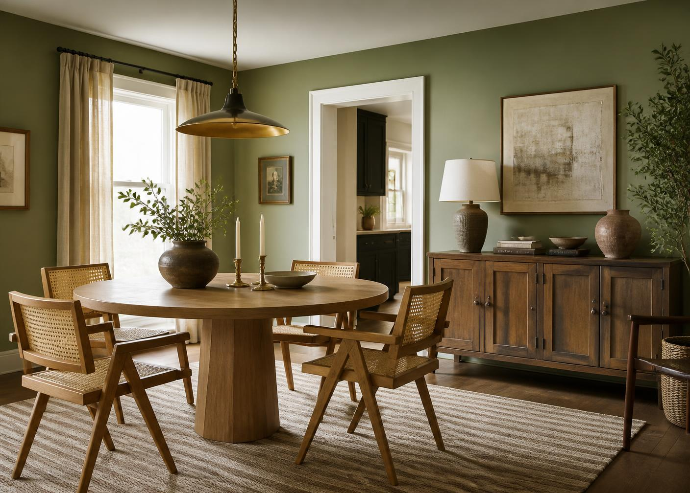

Our Storyfifty years in
We started with one bench, one lathe, and an argument about varnish that has never been settled.

Fig. 01 — Alder Yard, Bangalore1974
A studio behind a spice market
Two craftsmen take a lease on a heritage workshop in Bangalore and begin crafting furniture for people who cannot find one they like.
1991
The first upholstery room
A fabric library opens above the workshop. Pattern enters the archive and never leaves.
2008
Jaipur
Tomás joins with a third-generation joinery and the drawers begin to close properly.
2026
Thirty-six plates
The archive is deliberately small. Nothing is added until something earns its place.
Materials, chosen slowlyno shortcuts
Oak & Walnut
Sourced from sustainable forests across Western Ghats and Himalayas. Air-dried, never kilned in a hurry.
Linen & Velvet
Woven in Rajasthan to 40,000 Martindale rubs. Colours dyed in small lots, so no two seasons match exactly.
Stone & Brass
Marble sourced from Rajasthan, brass cast within a mile of the Bangalore workshop and left unlacquered to age.

Fig. 12 — Care in practiceCare & Deliverythe practical part
Care. Dust wood with a dry cloth and wax once a year. Keep upholstery out of direct afternoon sun. Brass will darken; this is intended.
Delivery. Made to order in 6–9 weeks, then delivered white-glove to the room of your choice. Complimentary over ₹50,000.
Returns. Thirty days on stock pieces. Made-to-measure commissions are final, but we will always repair.